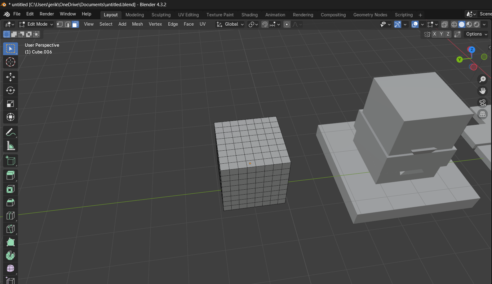
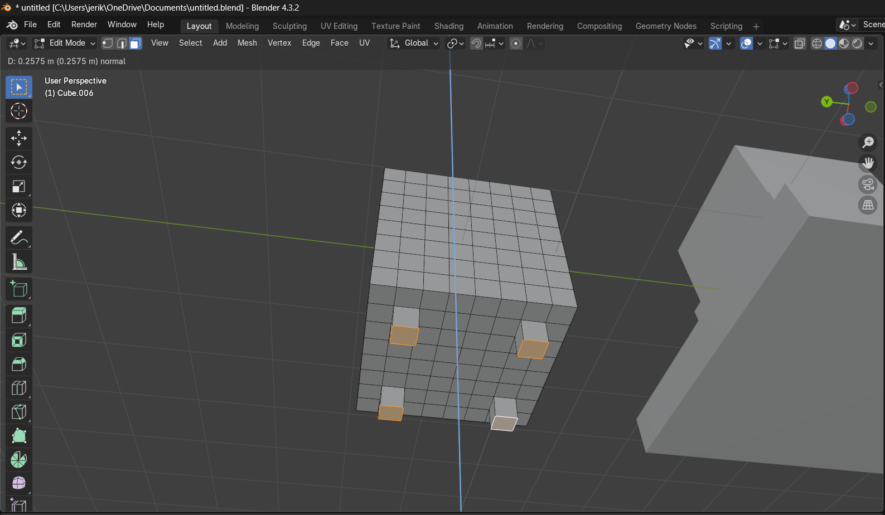
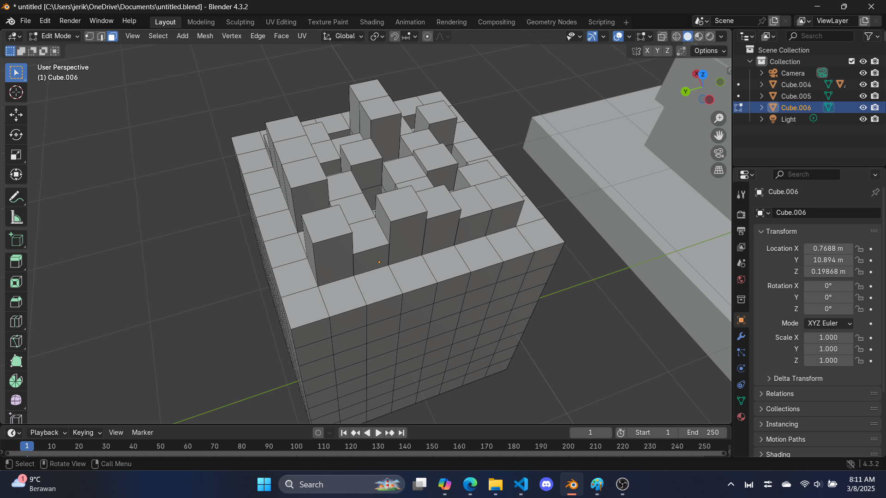

St. Patrick Objects - Part 3
"Money isn't everything, but everything needs money"
The pot (of gold)
Step 1: add a cube for the 3rd time
Add a cube again with 'shift + A' -> mesh -> cube. Subdivide it 3 times, which should mean your cube has 64 faces on each side.
Step 2: more extrusions
hover your camera to the bottom to multi select 4 faces, extrude them to give this pot some legs.
Finally, extrude a bunch of faces on the top, this is to simulate that pot of gold. This part is random. I made mine look like this, but you can do whatever, extrude up, extrude down
